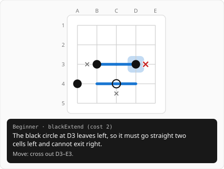
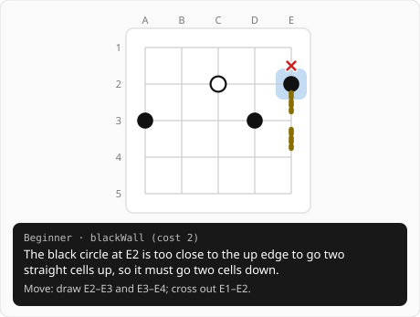
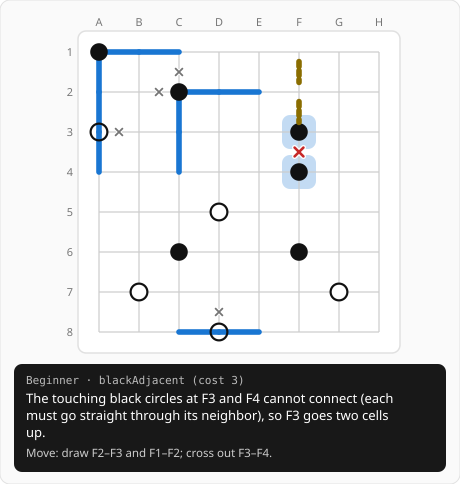
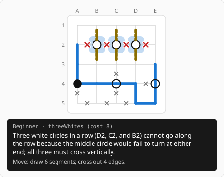
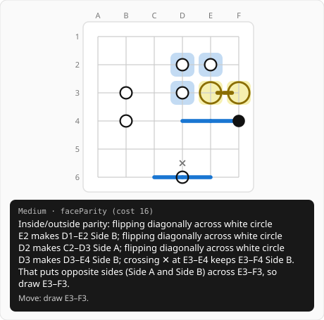
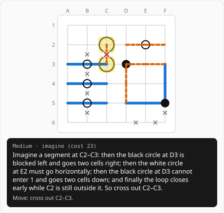
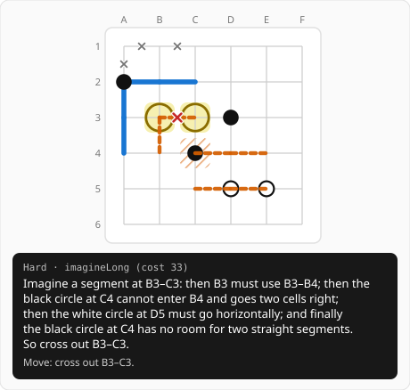

How to solve Masyu
Every solving technique the Hint button knows, ordered from easiest to hardest. Click any diagram to open that exact puzzle in the app.
Rules of Masyu
- Draw one single closed loop along the grid lines passing through every circle (white and black), with no crossings or branches.
- Empty intersections may or may not be visited by the loop.
- White circle (○): the loop goes straight through it, and must turn 90° in at least one of the two adjacent cells along the loop.
- Black circle (●): the loop turns 90° at it, and must go straight through both adjacent cells along the loop (at least two segments straight in each exit direction).
Bookkeeping
Five bookkeeping rules cost 1 each and run automatically before each hint step so the board stays tidy:
edgesOffCellOff(cost 1): A segment touching an off-loop cell is off.edgeEnds(cost 1): A segment puts both of its cells on the loop.fullCell(cost 1): A cell with two segments takes no more.isolatedCellOff(cost 1): A cell with all its edges off is not on the loop.closedLoopRestOff(cost 1): Once the single loop is closed, all remaining cells are off the loop.
Beginner
A puzzle is rated Beginner when its hardest required step is in this tier: straight white circles, black circles turning and going two straight, rows of adjacent white circles, dead ends, forced exits, and not closing the loop early.
whiteStraight
A white circle blocked on one axis goes straight along the other.

ARMORY-01 (5×5, the empty board). Click the picture to open this puzzle in the app.
Hint says: "The white circle at C1 cannot go vertically, so the loop must go straight horizontally through it."
blackExtend
A black circle continues straight two cells from an existing segment and turns away from the opposite side.

ARMORY-02 (5×5, after 2 earlier hints). Click the picture to open this puzzle in the app.
Hint says: "The black circle at D3 leaves left, so it must go straight two cells left and cannot exit right."
blackWall
A black circle blocked within two cells of a wall or cross must extend two cells the opposite way.

ARMORY-03 (5×5, the empty board). Click the picture to open this puzzle in the app.
Hint says: "The black circle at B1 is too close to the up edge to go two straight cells up, so it must go two cells down."
blackAdjacent
Two touching black circles cannot connect, so each extends two cells away from the other.

ARMORY-04 (6×6, after 4 earlier hints). Click the picture to open this puzzle in the app.
Hint says: "The touching black circles at C4 and D4 cannot connect (each must go straight through its neighbor), so C4 goes two cells left."
whiteMustTurn
A white circle that goes straight at one end must turn at the other.

ARMORY-05 (5×5, after 5 earlier hints). Click the picture to open this puzzle in the app.
Hint says: "The white circle at C2 goes straight through D2, so the loop must turn at B2 (cross out A2–B2)."
deadEnd
An empty cell with fewer than two exits left cannot be on the loop.

ARMORY-06 (5×5, after 5 earlier hints). Click the picture to open this puzzle in the app.
Hint says: "E1 has only one available exit left, so the loop cannot pass through it (cross out D1–E1)."
forcedExits
A loop cell with only two exits left must use both.

ARMORY-05 (5×5, after 6 earlier hints). Click the picture to open this puzzle in the app.
Hint says: "A3 is on the loop and has only two exits left, so it must use A2–A3."
blackPerp
A black circle cannot enter a neighbor that already has a perpendicular segment.

ARMORY-07 (5×5, after 9 earlier hints). Click the picture to open this puzzle in the app.
Hint says: "The black circle at D3 cannot enter D2 (which already has a perpendicular segment), so it must go two cells down."
whiteBothStraight
A white circle cannot use an axis where both neighbors already continue straight.

ARMORY-08 (6×6, after 9 earlier hints). Click the picture to open this puzzle in the app.
Hint says: "If the white circle at D5 went horizontally, both ends would go straight without turning; so it must go straight vertically."
noEarlyClose
A segment joining the two ends of one path would close the loop early.

ARMORY-06 (5×5, after 12 earlier hints). Click the picture to open this puzzle in the app.
Hint says: "A3 and B3 are the two ends of the same open path while other loop cells lie outside it, so A3–B3 cannot connect them."
samePathExits
A loop cell with three exits where two meet one path must use the third.
No puzzle in the current corpus needed this rule as its cheapest next hint yet (cheaper rules resolved those positions first).
closingCell
An empty cell whose only two exits meet one path cannot be on the loop.

ARMORY-09 (6×6, after 8 earlier hints). Click the picture to open this puzzle in the app.
Hint says: "C1 has only two exits left, and both lead to the ends of one path (D1 and B1): using it would close the loop early, so cross out C1–D1 and B1–C1."
threeWhites
Three white circles in a row must all cross perpendicular to the row.

ARMORY-10 (6×6, after 1 earlier hint). Click the picture to open this puzzle in the app.
Hint says: "Three white circles in a row (E4, D4, and C4) cannot go along the row because the middle circle would fail to turn at either end; all three must cross vertically."
twoWhitesStraight
Two touching white circles with a straight segment entering one cannot connect, so both cross perpendicular.

ARMORY-10 (6×6, after 6 earlier hints). Click the picture to open this puzzle in the app.
Hint says: "The touching white circles at D2 and C2 cannot join because E2–F2 already continues straight past D2; both must go vertically."
Medium
A puzzle is rated Medium when its hardest required step is in this tier: blocked turns, inside/outside parity, small pockets and chokepoints, and short 1–2 step imagined chains.
whiteNoTurnAxis
A white circle cannot use an axis whose two neighbors are both unable to turn.

ARMORY-11 (8×8, after 22 earlier hints). Click the picture to open this puzzle in the app.
Hint says: "Neither D5 and D7 can turn if entered from D6, so the white circle at D6 must go horizontally."
blackBlockedTarget
A black circle cannot extend toward a circle two cells away that cannot accept a straight segment.
No puzzle in the current corpus needed this rule as its cheapest next hint yet (cheaper rules resolved those positions first).
faceParity
Inside/outside square coloring (across lines, crosses, white diagonals, and black 3-to-1 corners) forces an edge.

ARMORY-12 (6×6, after 2 earlier hints). Click the picture to open this puzzle in the app.
Hint says: "Inside/outside parity: flipping diagonally across white circle E2 makes D1–E2 Side B; flipping diagonally across white circle D2 makes C2–D3 Side A; flipping diagonally across white circle D3 makes D3–E4 Side B; crossing ✕ at E3–E4 keeps E3–F4 Side B. That puts opposite sides (Side A and Side B) across E3–F3, so draw E3–F3."
twoEndsJoin
A sealed area with just two open ends must connect them, so their far ends cannot join early.

ARMORY-13 (6×6, after 10 earlier hints). Click the picture to open this puzzle in the app.
Hint says: "The highlighted area has only two open ends (A4 and B4), so they must connect inside it; that makes A2 and B2 ends of one path, so A2–B2 cannot close them early."
chokepoint
Blocking this segment would cut off a small area or leave a single chokepoint cell.

ARMORY-14 (6×6, after 6 earlier hints). Click the picture to open this puzzle in the app.
Hint says: "Without C3–D3, F3 would be the only cell connecting the highlighted area to the rest of the loop (a single loop cannot pass through it twice), so C3–D3 must be drawn."
parityPocket
The other choice would seal off a small pocket with an odd number of open ends.

ARMORY-15 (6×6, after 20 earlier hints). Click the picture to open this puzzle in the app.
Hint says: "If you tried drawing D4–D5, the highlighted area would be sealed off with 3 open ends (odd, so they can't all pair up); therefore cross out D4–D5."
imagine
Imagine a segment on or off and follow the easy rules: within a few steps something breaks.

ARMORY-19 (6×6, after 6 earlier hints). Click the picture to open this puzzle in the app.
Hint says: "Imagine a segment at E5–F5: then E6 must use E6–F6; and finally F6 is left with only one way out. So cross out E5–F5."
Hard
A puzzle is rated Hard when its hardest required step is in this tier: rectangle parity, large-area parity and chokepoints, and 3+ step imagined chains (pure logic, no trial and error).
crossingParity
The loop crosses the border of any rectangle or band an even number of times.
No puzzle in the current corpus needed this rule as its cheapest next hint yet (cheaper rules resolved those positions first).
chokepointArea
Blocking this segment would cut off a large area or leave a single chokepoint cell.

ARMORY-16 (6×6, after 12 earlier hints). Click the picture to open this puzzle in the app.
Hint says: "Without B1–C1, F4 would be the only cell connecting the highlighted area to the rest of the loop (a single loop cannot pass through it twice), so B1–C1 must be drawn."
imagineLong
Imagine a segment on or off and follow the easy rules through a long chain until something breaks.

ARMORY-20 (6×6, after 4 earlier hints). Click the picture to open this puzzle in the app.
Hint says: "Imagine a segment at B3–C3: then B3 must use B3–B4; then the black circle at C4 cannot enter B4 and goes two cells right; then the white circle at D5 must go horizontally; and finally the black circle at C4 has no room for two straight segments. So cross out B3–C3."
parityForces
The other choice would seal off an area with an odd number of open ends.

ARMORY-17 (12×12, after 72 earlier hints). Click the picture to open this puzzle in the app.
Hint says: "If you tried drawing G8–H8, the highlighted area would be sealed off with 5 open ends (odd, so they can't all pair up); therefore cross out G8–H8."
Expert
A puzzle is rated Expert when its hardest required step is in this tier: full multi-rule trial and error (trying an edge and following all rules to a contradiction), or beyond what Hint can explain.
tryEdge
Trying a segment one way leads to a contradiction.

ARMORY-18 (6×6, after 10 earlier hints). Click the picture to open this puzzle in the app.
Hint says: "Imagine a segment at C3–C4 and follow the forced deductions (starting with: the black circle at D3 is blocked left and goes two cells right; then C2 must use C2–D2; then the black circle at D3 cannot enter D2 and goes two cells down; reaching a contradiction after 3 steps). So cross out C3–C4."